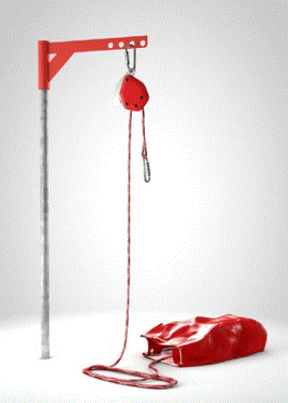

4.1 |
Grundsatz |
||||
Aufgrund des hohen Gefährdungspotenzials ist immer zu prüfen, ob sich das Arbeiten in Behältern, Silos und engen Räumen vermeiden lässt. Beispielsweise können
| |||||
4.2 |
Organisatorische Maßnahmen |
||||
| 4.2.1 | Planung unter dem Aspekt des Arbeitens in Behältern, Silos und engen Räumen | ||||
Die Belange des Arbeitens in Behältern, Silos und engen Räumen sind bei der Planung und Errichtung der Anlagen zu berücksichtigen. Das gilt besonders für die
|
|||||
| Bei der Gestaltung der Zugänge sind nicht nur die einschlägigen Normen zu berücksichtigen, sondern vor allem die geplanten Zugangs- und Rettungsverfahren sowie die zu verwendenden persönlichen Schutzausrüstungen (siehe Abschnitt 5 und 6 sowie Anhang 4). | |||||
| 4.2.2 | Arbeitsablauforganisation | ||||
In einer betrieblichen Arbeitsablauforganisation hat der Unternehmer oder die Unternehmerin festzulegen, wer die organisatorischen Maßnahmen durchführt und wer
|
|||||
| 4.2.3 | Unterweisung aller an den Arbeiten beteiligten Personen | ||||
| 4.2.3.1 | Auf der Grundlage der Gefährdungsbeurteilung ist vor Aufnahme der Arbeiten die Unterweisung aller beteiligten Personen über die Gefährdungen und die erforderlichen Schutzmaßnahmen entsprechend des Erlaubnisscheins oder der Betriebsanweisung sicherzustellen. Siehe § 12 Arbeitsschutzgesetz und §§ 4 und 31 der DGUV Vorschrift 1 "Grundsätze der Prävention". |
||||
| 4.2.3.2 | Bei regelmäßig wiederkehrenden, gleichartigen Arbeiten genügt es, wenn die Unterweisung in angemessenen Zeitabständen, mindestens jedoch einmal jährlich, erfolgt. | ||||
| 4.2.3.3 | Die festgelegten Rettungsmaßnahmen sind von den für die Rettung vorgesehenen Personen zu üben. Siehe § 31 der DGUV Vorschrift 1 "Grundsätze der Prävention" |
||||
| 4.2.4 | Aufsichtsführende(r) | ||||
| 4.2.4.1 | Der Unternehmer oder die Unternehmerin hat vor Beginn der Arbeiten in Behältern, Silos und engen Räumen eine zuverlässige, mit den Arbeiten vertraute Person, welche die Aufsicht führt und weisungsbefugt ist, einzusetzen. Der oder die Aufsichtsführende wird in der Regel durch den Betreiber des Behälters, Silos oder engen Raumes eingesetzt. Sind mehrere Unternehmen an den Arbeiten beteiligt, sollte eine genaue Abstimmung darüber erfolgen, wer als Aufsichtsführende bzw. Aufsichtsführender fungiert. |
||||
| 4.2.4.2 | Der oder die Aufsichtsführende kann im Auftrag der Unternehmerin oder des Unternehmers den Erlaubnisschein nach Abschnitt 4.1.6.1 ausstellen. Er hat die Einhaltung der festgelegten Schutzmaßnahmen zu überwachen.
Die erforderlichen Kontrollen sind vor Beginn und während der Arbeiten in angemessenen Zeitabständen durchzuführen. Die Zeitabstände sind abhängig von:
|
||||
| 4.2.5 | Sicherungsposten | ||||
| 4.2.5.1 | Der Unternehmer oder die Unternehmerin hat bei Arbeiten in Behältern, Silos und engen Räumen mindestens einen Sicherungsposten einzusetzen. Dieser hat mit den im Behälter oder engen Raum tätigen Personen ständige Verbindung zu halten. Der Sicherungsposten muss zuverlässig sein und über die erforderlichen geistigen und körperlichen Fähigkeiten verfügen. Hierzu gehören in Abhängigkeit von den getroffenen Schutzmaßnahmen z. B.:
Eine Personen-Notsignal-Anlage darf nur als Maßnahme der ständigen Verbindung eingesetzt werden. Sie darf einen Sicherungsposten nicht ersetzen. Siehe auch DGUV Regel 112-139 "Einsatz von Personen-Notsignal-Anlagen" und DGUV Information 212-139 "Notrufmöglichkeiten für allein arbeitende Personen" |
||||
| 4.2.5.2 | Der Sicherungsposten muss jederzeit Hilfe herbeiholen können. Er muss mit den festgelegten Notfall- und Rettungsmaßnahmen nach Abschnitt 6 vertraut sein (siehe auch Abschnitt 6.2.2). | ||||
| 4.2.5.3 | Sicherungsposten sind nicht erforderlich, wenn sichergestellt worden ist, dass
|
||||
| 4.2.6 | Erlaubnisschein | ||||
| 4.2.6.1 | Vor Beginn der Arbeiten in Behältern, Silos und engen Räumen hat die verantwortliche Person (Unternehmer/-in bzw. Beauftragte/r) einen Erlaubnisschein auszustellen, in dem die erforderlichen Schutzmaßnahmen festgelegt sind. Aufsichtführende, Sicherungsposten und – sofern vorhanden –
Verantwortliche eines Fremdunternehmens (Auftragnehmers) haben durch Unterschrift auf dem Erlaubnisschein die Kenntnis über die festgelegten Maßnahmen zu bestätigen. Wird der Erlaubnisschein von einem Fremdunternehmer bzw. einer Fremdunternehmerin ausgestellt, hat der Auftraggeber diesen bei der Gefährdungsbeurteilung bezüglich der betriebsspezifischen Gefahren zu unterstützen. Bei komplexen Gefährdungen und Belastungen hat es sich in der Praxis bewährt, wenn der Erlaubnisschein vom Betreiber oder vom Nutzer bzw. von der Nutzerin des Behälters, Silos oder engen Raumes ausgestellt wird. In speziellen Fällen kann der Erlaubnisschein nur vom Unternehmer bzw. von der Unternehmerin des durchführenden Unternehmens ausgestellt werden. Solche Situationen können z. B. sein:
Die Aufhebung der Schutzmaßnahmen bei Ende der Arbeit ist im Erlaubnisschein zu dokumentieren. |
||||
| 4.2.6.2 | Der Erlaubnisschein kann durch eine Betriebsanweisung ersetzt werden, wenn immer gleichartige Arbeitsbedingungen bestehen und gleichartige wirksame Schutzmaßnahmen festgelegt sind (siehe z. B. Anhang 4). | ||||
| 4.2.7 | Beginn der Arbeiten | ||||
| 4.2.7.1 | Arbeiten in Behältern, Silos und engen Räumen dürfen erst begonnen werden, nachdem die verantwortliche Person (Unternehmer/in bzw. Aufsichtführende/r) festgestellt hat, dass die schriftlich festgelegten Schutzmaßnahmen geeignet und getroffen sowie alle Beteiligten unterwiesen sind. | ||||
| 4.2.7.2 | Auch nach Arbeitsunterbrechungen (Schichtwechsel, Wiederaufnahme der Arbeit am folgenden Tag) ist die Eignung und Wirksamkeit der schriftlich festgelegten Maßnahmen durch den Aufsichtführenden festzustellen. | ||||
| 4.2.8 | Sicherung der Arbeitsstelle | ||||
| Es ist sicherzustellen, dass an den Arbeiten nicht beteiligte Personen von der Arbeitsstelle ferngehalten werden. Insbesondere ist dies bei Arbeiten außerhalb umschlossener Betriebsstätten wichtig, z. B. im öffentlichen Straßenverkehr oder im privaten Bereich. | |||||
| 4.2.9 | Aufhebung der Schutzmaßnahmen | ||||
| Der bzw. die Aufsichtführende darf die Schutzmaßnahmen erst aufheben, wenn die Arbeiten abgeschlossen sind und alle Personen die Behälter, Silos und engen Räume verlassen haben. | |||||
4.3 |
Schutzmaßnahmen gegen Gefahrstoffe und gefährdende Medien |
||||
| Eine Gefährdung durch Gefahrstoffe liegt beispielsweise vor, wenn die Arbeitsplatzgrenzwerte überschritten sind oder Hautkontakt besteht. Von gefährdenden Medien gehen Gefahren aus, die nicht durch gesundheitsgefährdende Eigenschaften, sondern durch andere Wirkungen, wie Ertrinken oder Versinken, hervorgerufen werden. Neben den Arbeitsplatzgrenzwerten existieren auch andere Arten von Beurteilungsmaßstäben (ERB, BM, DNEL, …) |
|||||
| 4.3.1 | Entleeren der Behälter, Silos und engen Räume | ||||
| 4.3.3.1 | Behälter, Silos und enge Räume sind vor Beginn der Arbeiten zu entleeren und zu reinigen. Nach Möglichkeit soll das Füllgut aus dem Behälter, Silo oder engen Raum entfernt werden, ohne dass sich dazu Personen darin aufhalten müssen, z. B. durch Ablassen, Absaugen, Abpumpen, Abziehen oder durch Fördereinrichtungen. Rückstände sollen durch auf das Füllgut abgestimmte Maßnahmen, z. B. durch Ausdämpfen, durch wiederholtes Füllen und Entleeren des Behälters mit Wasser (sofern die statischen Voraussetzungen dafür vorhanden sind), durch Ausspritzen oder Ausspülen mit geeigneten Flüssigkeiten, unter gleichzeitigem Durchrühren gegebenenfalls vorhandener schlammartiger Rückstände, oder durch Verdrängen mit geeigneten Gasen oder Spülen mit Luft, entfernt werden. Die durch organische Löse- beziehungsweise Reinigungsmittel möglichen Brand-, Explosions- oder Gesundheitsgefahren sind zu berücksichtigen. Es muss gewährleistet sein, dass im Zuge des Entleerens Stoffe, Gemische oder Rückstände gefahrlos gelagert, abgeleitet oder entfernt werden; auf die einschlägigen Umweltschutzbestimmungen wird hingewiesen. Gegebenenfalls sind angrenzende Behälter und enge Räume und sonstige Bereiche mit zu berücksichtigen. Bei Hochdruckreinigungsverfahren sollte zur Vermeidung elektrostatischer Aufladungen nicht mit voll entsalztem Wasser oder anderen ionenarmen Flüssigkeiten gearbeitet werden. Auf Entleerung und Reinigung kann verzichtet werden, wenn von den Stoffen oder Gemische keine Gefährdungen ausgehen oder sich die vom Inhalt ausgehenden Gefährdungen aus betriebstechnischen Gründen nicht beseitigen lassen und dagegen andere Schutzmaßnahmen getroffen werden. Vom Inhalt gehen z. B. keine Gefährdungen aus, wenn die Stoffe und Gemische weder gesundheitsgefährlich noch brennbar sind und ein Ertrinken, Ersticken oder Versinken nicht möglich ist. Gefährdungen, die sich nicht beseitigen lassen, können z. B. sein:
|
||||
| 4.3.2 | Abtrennen der Behälter, Silos und engen Räume | ||||
| 4.3.2.1 | Vor Beginn der Arbeiten in Behältern, Silos und engen Räumen ist sicherzustellen, dass alle Zu- und Abgänge an den Behältern, Silos und engen Räumen, durch die Gefahrstoffe oder erstickende Gase in gefährlicher Konzentration oder Menge oder mit gefährlichen Temperaturen oder Drücken in Behälter, Silos und enge Räume gelangen können, wirksam unterbrochen sind. | ||||
|
|||||
| |||||
Zu- und Abgänge für Stoffe können z. B. durch folgende Maßnahmen wirksam unterbrochen werden:
|
|||||
| 4.3.2.2 | Ist eine wirksame Unterbrechung aus betriebstechnischen Gründen nicht möglich, darf in Behältern, Silos oder engen Räumen nur gearbeitet werden, wenn die dort arbeitenden Personen auf andere Weise geschützt sind. Betriebstechnische Gründe, die eine wirksame Unterbrechung nicht ermöglichen, liegen z. B. bei Kanälen und Schächten vor. Die Personen können z. B. durch Lüftung oder Benutzung persönlicher Schutzausrüstungen auf andere Weise geschützt werden. |
||||
| 4.3.3 | Lüftung | ||||
| 4.3.3.1 | Vor Beginn und während der Arbeiten in Behältern, Silos und engen Räumen muss durch Lüftung sichergestellt werden, dass keine Gase, Dämpfe, Nebel oder Stäube in gesundheitsgefährlicher Konzentration sowie keine explosionsfähigen Gemische oder Sauerstoffmangel auftreten können. Es wird unterschieden zwischen technischer (künstlicher) und freier (natürlicher) Lüftung. Freie Lüftung, herbeigeführt durch Druck- oder Temperaturunterschiede, ist nur ausreichend, wenn die Arbeitsplatzgrenzwerte oder andere relevante gesundheitsbasierte Grenzwerte eingehalten sind und Sauerstoffmangel ausgeschlossen ist. Das trifft vor allem zu, wenn Arbeiten geringen Umfangs
Die Bildung explosionsfähiger Atmosphäre gilt als verhindert, wenn dauerhaft sichergestellt ist, dass die Konzentration der Gase, Dämpfe, Nebel oder Stäube im Gemisch mit Luft unter 50 % der unteren Explosionsgrenze liegt. Bei Vorliegen nichtatmosphärischer Bedingungen sind zur Beurteilung einer möglichen Bildung explosionsfähiger Gemische die veränderten sicherheitstechnischen Kenngrößen zu berücksichtigen. |
||||
| 4.3.3.2 | Zur Belüftung muss Frischluft benutzt werden. Die Frischluft muss Außenluftqualität haben. Die Frischluft muss der freien Außenluft oder, wenn dies nicht durchführbar ist, Räumen entnommen werden, deren Luft frei von gesundheitsgefährlichen oder brennbaren Verunreinigungen ist. Diese Räume müssen mit der freien Außenluft durch große Öffnungen in Verbindung stehen. Die Luftzuführung ist so zu gestalten, dass der gesamte Raum im Behälter durchspült wird und die Personen möglichst im Frischluftstrom arbeiten. Bei der Absaugung verunreinigter Luft ist sicherzustellen, dass ausreichend Frischluft, gegebenenfalls durch Einsatz technischer Lüftung, nachströmen kann. Lösemitteldämpfe sind in der Regel an der Entstehungsstelle abzusaugen. Bei der Absaugung ist dafür zu sorgen, dass die Lösemitteldämpfe nicht in die Atemluft von Beschäftigten gelangen. Hinweise zur Lüftung siehe Anhang 3. |
||||
| 4.3.3.3 | Sauerstoff und Luft mit erhöhtem Sauerstoffanteil dürfen zur Belüftung nicht verwendet werden. | ||||
| 4.3.3.4 | Ist damit zu rechnen, dass in der Abluft gesundheitsgefährliche Stoffe in gefährlicher Konzentration vorhanden sind, ist die Abluft so abzuführen, dass Personen nicht gefährdet werden. Kann das Vorhandensein gefährlicher explosionsfähiger Atmosphäre in der Abluft nicht ausgeschlossen werden, sind zusätzliche Maßnahmen zur Vermeidung von wirksamen Zündquellen in der Abluftleitung zu treffen. |
||||
| 4.3.3.5 | Die Wirksamkeit der Lüftung ist zu überwachen und gegen Schalthandlungen durch Unbefugte zu sichern. Die Überwachung kann z. B. geschehen durch
Die Richtung der Luftbewegung und die Durchspülung des Raumes lassen sich durch Flatterbänder, Windfähnchen oder Rauchröhrchen feststellen. Die zur Feststellung gefährlicher explosionsfähiger Atmosphäre verwendeten Messeinrichtungen müssen von einer anerkannten Prüfstelle für geeignet befunden sein. (Liste funktionsgeprüfter Gaswarngeräte, www.bgrci.de/exinfode/dokumente/gaswarngeraete/funktionsgepruefte-gaswarngeraete/) |
||||
| 4.3.3.6 | Bei unwirksam werden der Lüftung sind die Arbeiten im Behälter, Silo und in engen Räumen sofort einzustellen. Vor Wiederaufnahme der Arbeiten ist die Wirksamkeit der Lüftung zu sichern und analog zu Abschnitt 4.2.3.5 zu prüfen. | ||||
| 4.3.4 | Atemschutz | ||||
| 4.3.4.1 | Kann das Auftreten von Gefahrstoffen in gefährlicher Konzentration oder Menge durch die Maßnahmen nach den Abschnitten 4.2.1 bis 4.2.3 nicht verhindert werden, sind bei den Arbeiten in Behältern, Silos und engen Räumen Atemschutzgeräte zu benutzen. Bei der Auswahl eines geeigneten Atemschutzgerätes ist u. a.. dessen Schutzfaktor (Vielfache des Grenzwertes) zu berücksichtigen, siehe auch DGUV Regel 112-190 "Benutzung von Atemschutzgeräten". | ||||
| 4.3.4.2 | Der Einsatz von Filtergeräten ist nur zulässig, wenn sichergestellt werden kann, dass keine Gefährdung durch Sauerstoffmangel auftritt. Erforderlichenfalls ist die Sauerstoffkonzentration kontinuierlich zu messen und Sauerstoffmangel durch optische oder akustische Warngeräte anzuzeigen, siehe auch DGUV Regel 112-190 "Benutzung von Atemschutzgeräten". | ||||
| 4.3.4.3 | Arbeiten in Behältern, Silos und engen Räumen dürfen bei einem Sauerstoffgehalt kleiner 17 Vol.-% nur unter Einsatz von Isoliergeräten ausgeführt werden. | ||||
| 4.3.4.4 | Bei gleichzeitiger Benutzung von Atemschutz und persönlicher Schutzausrüstungen gegen Absturz sind beide Ausrüstungen so einzusetzen, dass eine gegenseitige Beeinträchtigung vermieden wird. Gegenseitige Beeinträchtigung kann vermieden werden, indem aufeinander abgestimmte Systeme verwendet werden, z. B. Auffanggurte mit integrierter Tragevorrichtung für Druckluftflaschen. Eine Beeinträchtigung der Funktion des Atemschutzgerätes kann durch den Fangstoß erfolgen, z. B. Abreißen des Schlauches oder Herunterreißen des Atemanschlusses. Um dieses Risiko zu minimieren, sind bei gleichzeitiger Verwendung von Atemschutz und persönlichen Schutzausrüstungen gegen Absturz der Anschlagpunkt und die Einstellung des Verbindungsmittels so auszuwählen, dass eine möglichst geringe Auffangstrecke wirksam wird. |
||||
| 4.3.5 | Freimessen der Behälter, Silos und engen Räume | ||||
| 4.3.5.1 | Im Rahmen der Gefährdungsbeurteilung ist festzustellen, welche Stoffe und Gemische in welcher Konzentration im Behälter, Silo oder engen Raum enthalten sind oder im Verlauf der Arbeiten auftreten können und ob Sauerstoffmangel auftreten kann. In den meisten Fällen ist dazu Freimessen erforderlich. Die Messungen müssen an repräsentativer Stelle erfolgen. Zum möglichen Auftreten von Gefahrstoffen bzw. Sauerstoffmangel siehe Abschnitt 2 Nr. 11 und 12. |
||||
| 4.3.5.2 | Zum Freimessen sind geeignete Messverfahren zu benutzen. Geeignete Messverfahren sind:
Bei der Auswahl der Messverfahren sind die speziellen Eigenschaften der zu messenden Stoffe zu berücksichtigen, z. B. Querempfindlichkeiten gegen andere Stoffe einschließlich Wasserdampf. Entscheidend für die Auswahl des Messverfahrens sind auch die Verhältnisse im Behälter, Silo oder engen Raum. Es muss unterschieden werden zwischen Behältern, Silos und engen Räumen:
|
||||
| 4.3.5.3 | Mit dem Freimessen dürfen nur Personen beauftragt werden, die über die erforderliche Fachkunde verfügen. Die Fachkunde bezieht sich auf:
Die Fachkunde kann z. B. nach dem DGUV Grundsatz 313-002 "Auswahl, Ausbildung und Beauftragung von Fachkundigen zum Freimessen nach der DGUV Regel 113-004" erworben werden. |
||||
| 4.3.5.4 | Die Messungen haben an repräsentativer Stelle zu erfolgen. Hierbei sind die Benutzerinformationen der Hersteller der Messgeräte zu berücksichtigen. Die durchgeführten Messungen und deren Ergebnisse sind zu dokumentieren. | ||||
| 4.3.5.5 | In vielen Fällen wird nach der Freigabe auch während der Arbeiten kontinuierlich gemessen. Für diese kontinuierliche Überwachung durch den Sicherungsposten, z. B. mit Gaswarngeräten, ist keine Fachkunde nach dem DGUV Grundsatz 313-002 erforderlich. Die Person, die die kontinuierliche Überwachung durchführt, muss zu diesem Sachverhalt unterwiesen sein. Die spezielle Unterweisung umfasst mindestens
|
||||
4.4 |
Schutzmaßnahmen gegen Gefährdungen durch Sauerstoffmangel und -überschuss |
||||
| 4.4.1 | Vermeiden der Gefährdungen durch Sauerstoffmangel | ||||
| 4.4.1.1 | Gefährdungen durch Sauerstoffmangel können vorliegen, wenn die Sauerstoffkonzentration
niedriger ist als der Sauerstoffgehalt der natürlichen
Atemluft von 20,9 Vol.-%. Ist die Sauerstoffkonzentration niedriger als 20,9
Vol.-%, ist die Ursache hierfür zu ermitteln und zu beurteilen, ob eine
Gefährdung durch Fremdgase oder Gefahrstoffe vorliegt. Eine Gefährdung liegt z. B. vor, wenn die Differenz zu den 20,9 Vol.-% Sauerstoff aus Gefahrstoffen besteht und deren Arbeitsplatzgrenzwerte oder Kurzzeitwerte überschritten sind. Dies betrifft z. B. auch Kohlendioxid. Eine Gefährdung liegt z. B. nicht vor, wenn die Differenz zu den 20,9 Vol.-% Sauerstoff aus Stickstoff oder Edelgasen besteht und der Sauerstoffgehalt mindestens 17 % beträgt. Auch Stoffe und Lagergüter, die keine Gefahrstoffe sind, können durch Sauerstoffzehrung einen lebensgefährlichen Abfall der Sauerstoffkonzentration in Behältern, Silos und engen Räumen verursachen (siehe Anhang 5). |
||||
| 4.4.1.2 | Als Schutzmaßnahmen gegen Sauerstoffmangel sind die Maßnahmen nach Abschnitt 4.2 zu ergreifen. | ||||
| 4.4.2 | Vermeiden der Gefährdungen durch Sauerstoffüberschuss | ||||
| Gefährdungen durch Sauerstoffüberschuss können vorliegen, wenn die Sauerstoffkonzentration höher als 20,9 Vol.-% ist und sich damit die Gefahr einer Entzündung von Stoffen erhöht. Zur Vermeidung von Sauerstoffüberschuss:
Sauerstoff kann eine Selbstentzündung von Öl und Fett und von Textilien, die mit Öl und Fett verunreinigt sind, bewirken. Bei erhöhten Sauerstoffkonzentrationen können sich auch sicherheitstechnische Kenndaten verändern. Beispiele: Obere Explosionsgrenzen, Staubexplosionsklassen, Druckanstiegsgeschwindigkeiten, Zünd- und Glimmtemperaturen, Explosionsdrucke, Flammentemperaturen. Sauerstoffüberschuss kann auftreten durch Anreicherung mit Sauerstoff; z. B. durch Fehlbedienungen oder Undichtigkeiten bei Schweißarbeiten oder in Behältern, die mit Sauerstoff gefüllt waren und unzureichend entleert und gespült wurden. Muss in inertisierten Behältern mit selbstentzündlichen Stoffen mit umluftunabhängigem Atemschutz gearbeitet werden, kann bereits die Ausatemluft ausreichen, um den Effekt der Inertisierung im Nahbereich aufzuheben. |
|||||
4.5 |
Explosionsschutzmaßnahmen |
||||
| 4.5.1 | Vermeiden des Auftretens explosionsfähiger Atmosphäre oder explosionsfähiger Gemische | ||||
| Die vorrangige Maßnahme des Explosionsschutzes ist das Vermeiden des Auftretens gefährlicher explosionsfähiger Atmosphäre durch Maßnahmen nach Abschnitt 4.3 (siehe auch TRGS 720 ff.) Bei Arbeiten in Behältern, Silos und engen Räumen können nichtatmosphärische Bedingungen herrschen, z. B. durch erhöhte Sauerstoffkonzentrationen oder die Anwesenheit anderer Oxidationsmittel. Bei der Festlegung der Explosionsschutzmaßnahmen muss berücksichtigt werden, dass unter nichtatmosphärischen Bedingungen die sicherheitstechnischen Kenngrößen verändert sind. In vielen Fällen ist das Auftreten einer explosionsfähigen Atmosphäre oder eine explosionsfähigen Gemisches schwer einzuschätzen. Diese können z. B. entstehen:
Die Bildung einer explosionsfähigen Atmosphäre durch Dämpfe einer entzündbaren Flüssigkeit wird verhindert, wenn die Verarbeitungstemperatur der Flüssigkeit unter ihrem unteren Explosionspunkt (UEP) liegt. Dabei ist zu berücksichtigen:
Wird eine entzündbare Flüssigkeit verspritzt oder versprüht (z. B. Farbspritzen), entstehen im Spritzbereich Aerosole. Diese bilden unabhängig von den o.g. Anforderungen eine gefährliche explosionsfähige Atmosphäre. Mit der Bildung einer gefährlichen explosionsfähigen Atmosphäre durch Aerosole ist nicht zu rechnen, wenn ausschließlich nicht entzündbare Flüssigkeiten, z. B. wasserverdünnbare Beschichtungsstoffe/Reinigungsflüssigkeiten mit der geforderten Zusammensetzung, verspritzt oder versprüht werden. UV-härtende Lacke können entzündbar in fein verteiltem Zustand sein, obwohl sie keine organischen Lösemittel enthalten. Die Bildung explosionsfähiger Atmosphäre kann auch durch Inertisierung (z. B. durch Einleitung von Stickstoff) verhindert werden. Die Inertisierung ist zu überwachen. |
|||||
| 4.5.2 | Vermeiden von Zündquellen | ||||
| 4.5.2.1 | Kann aus betriebstechnischen Gründen das Vorhandensein gefährlicher explosionsfähiger Atmosphäre oder gefährlicher explosionsfähiger Gemische nicht vermieden werden, ist gemäß TRBS 2152 Teil 3 das Auftreten von wirksamen Zündquellen konsequent zu vermeiden. Für Oberflächenbehandlungen in Räumen und Behältern gilt die TRGS 507, die Hinweise zu Explosionsschutzmaßnahmen enthält und deren Überlegungen zu erforderlichen Zündschutzmaßnahmen für die Beurteilung ähnlich gelagerter Szenarien hilfreich sind. Bei den temporären Arbeiten in Behältern, Silos und engen Räumen ist eine Zoneneinteilung nach der DGUV Regel 113-001 "Explosionsschutz-Regeln" nicht sinnvoll. Maßnahmen zur Zündquellenvermeidung sind z. B.:
|
||||
| 4.5.2.2 | Zündquellen sind auch in der näheren Umgebung von Behältern, Silos und engen Räumen zu berücksichtigen. Neben Zündquellen durch betrieblich vorhandene Einrichtungen sind dabei auch Arbeiten mit Zündgefahr zu betrachten, wie z. B.:
|
||||
4.6 |
Schutzmaßnahmen gegen Gefährdungen durch Biostoffe im Sinne der Biostoffverordnung (BioStoffV) |
||||
| 4.6.1 | Zum Schutz gegen biologische Gefährdungen sind Behälter, Silos oder enge Räume vor Beginn der Arbeiten analog den Abschnitten 4.2.1 und 4.2.2 zu entleeren, zu reinigen und abzutrennen. Hierbei kommt auch der Wahl der richtigen Arbeitsmittel Bedeutung zu: so kann beispielsweise ein Hochdruckreiniger Biofilme beseitigen, während der Reinigung entstehen dabei aber Bioaerosole, die Biostoffe wie z. B. Legionellen enthalten können. Siehe hierzu auch § 9 Biostoffverordnung. |
||||
| 4.6.2 | Entsprechend den Gefährdungen, die durch Biostoffe auftreten können, sind wirksame Desinfektions- und Inaktivierungsverfahren für die Behälter, Silos oder engen Räume festzulegen. Eine Infektionsgefährdung für Beschäftigte ist zu unterstellen, wenn Biostoffe der Risikogruppe 2 oder höher auftreten. Informationen über Biostoffe und die dazugehörige Risikogruppe, Expositionsmöglichkeiten sowie Informationen zur Gefährdungsbeurteilung, Desinfektion und arbeitsmedizinische Versorge erhält man über die internetbasierte Datenbank zu Biostoffen (GESTIS-Biostoffdatenbank) der DGUV (www.gestis-biostoffdatenbank.de). Desinfektion ist die gezielte Behandlung von Materialien, Gegenständen oder Oberflächen mit physikalischen bzw. chemischen Verfahren, um zu bewirken, dass von ihnen keine Infektionsgefahr mehr ausgeht. Desinfektionsmaßnahmen müssen mit wirksamen Mitteln und Verfahren durchgeführt werden. Einzelheiten sind
|
||||
| 4.6.3 | Werden nicht ausschließlich Tätigkeiten mit Biostoffen der Risikogruppe 1 ohne sensibilisierende und toxische Wirkungen ausgeübt, sind in Abhängigkeit von der Gefährdungsbeurteilung weitergehende Schutzmaßnahmen zu ergreifen. Dabei sind insbesondere
Impfungen sind Bestandteil der arbeitsmedizinischen Vorsorge und den Beschäftigten anzubieten, soweit das Risiko einer Infektion tätigkeitsbedingt und im Vergleich zur Allgemeinbevölkerung erhöht ist. Siehe hierzu § 6 (2) ArbMedV. |
||||
4.7 |
Schutzmaßnahmen gegen Strahlung |
||||
| Strahlenquellen sind vor Beginn der Arbeiten in Behältern, Silos und engen Räumen zu entfernen, wirksam abzuschirmen oder abzuschalten und gegen Einschalten zu sichern. Zu den Strahlenquellen gehören z. B. Röntgengeräte, radioaktive Präparate, Lasereinrichtungen, UV-Strahlenquellen, Mikrowellenerzeuger und Geräte, die elektromagnetische Felder erzeugen. Besondere Schutzmaßnahmen können erforderlich sein bei Personen mit aktiven oder passiven Implantaten (z. B. bei Trafostationen etc.). Je nach Art der Strahlenquellen kann z. B. ein Entfernen, eine ausreichende Bleiabschirmung oder ein wirksames Unterbinden der Energiezufuhr in Frage kommen. Siehe hierzu auch Röntgenverordnung, Strahlenschutzverordnung, Arbeitsschutzverordnung zu künstlicher optischer Strahlung (OstrV) und DGUV Vorschrift 15 und 16 "Elektromagnetische Felder"). |
|||||
4.8 |
Schutzmaßnahmen gegen Hitze und Kälte |
||||
| 4.8.1 | Heiz- und Kühleinrichtungen sowie Kälteanlagen sind vor Beginn der Arbeiten in Behältern, Silos und engen Räumen außer Betrieb zu setzen und gegen Ingangsetzen zu sichern, wenn die Oberflächen- und Raumtemperaturen zu Gefährdungen von Personen führen können. In Behältern und engen Räumen darf erst gearbeitet werden, wenn keine Gefährdungen durch zu hohe oder zu niedrige Temperaturen mehr bestehen können. Bei der Beurteilung der Gefährdungen sind die Oberflächen- und Raumtemperaturen zu berücksichtigen (siehe auch DGUV Information 215-510 "Beurteilung des Raumklimas") |
||||
| 4.8.2 | Muss aus betriebstechnischen Gründen von den Forderungen des Abschnittes 4.7.1 abgewichen werden, darf in Behältern, Silos und engen Räumen nur gearbeitet werden, wenn die Personen auf andere geeignete Weise geschützt sind. Die Personen können auf andere Weise, z. B. durch das Benutzen persönlicher Schutzausrüstungen oder durch die Begrenzung der Aufenthaltsdauer, geschützt werden. Zur Beurteilung der Gefährdung ist arbeitsmedizinischer Sachverstand heranzuziehen. |
||||
4.9 |
Schutzmaßnahmen gegen mechanische Gefährdungen |
||||
| 4.9.1 | Mit Arbeiten in Behältern, Silos und engen Räumen darf erst begonnen werden, nachdem Gefahr bringende Bewegungen zum Stillstand gekommen sind und ein unbefugtes, irrtümliches oder unerwartetes Ingangsetzen sicher vermieden ist. Um dies zu erreichen, müssen alle Antriebe von bewegten Bauteilen und Maschinen von jeder einzelnen Energiequelle dauerhaft sicher getrennt und gegen Wiedereinschalten gesichert werden. Zur dauerhaft sicheren Trennung der Arbeitsmittel von Energiequellen hat sich insbesondere die Anwendung sogenannter "lock-out-tag-out" (LOTO)-Systeme bewährt. |
||||
| 4.9.2 | Zusätzlich zu Abschnitt 4.8.1 muss ein in Gang kommen Gefahr bringender Bewegungen infolge gespeicherter Energie sicher vermieden werden. Ein in Gang kommen Gefahr bringender Bewegungen infolge gespeicherter Energie ist z. B. vermieden, wenn
Es kann im Einzelfall erforderlich sein, mehrere Maßnahmen gleichzeitig zu treffen. |
||||
| 4.9.3 | Besteht die Gefährdung, dass Versicherte bei Arbeiten in Behältern, Silos und engen Räumen durch herabstürzende Gegenstände verletzt werden können, sind Schutzmaßnahmen zu treffen. Die Gefährdung durch herabstürzende Gegenstände können z. B. bestehen durch:
 Abb. 21 Sicherheitslastrolle | ||||
| 4.9.4 | Strahl- und Spritzarbeiten sind so durchzuführen, dass sich Personen nicht selbst oder gegenseitig gefährden. | ||||
4.10 |
Schutzmaßnahmen gegen elektrische Gefährdungen |
||||
| Aufgrund der charakteristischen Eigenschaften von Behältern, Silos und engen Räumen (insbesondere Zugangssituation, Materialbeschaffenheit und Bewegungsfreiheit im Inneren) ist regelmäßig eine erhöhte elektrische Gefährdung anzunehmen (=> Schutzmaßnahmen bei begrenzter Bewegungsfreiheit in leitfähiger Umgebung). | |||||
| 4.10.1 | Betrieb ortsfester elektrischer Betriebsmittel Ortsfeste elektrische Betriebsmittel sind unter Anwendung einer der folgenden Maßnahmen zu betreiben:
|
||||
| 4.10.2 | Betrieb ortsveränderlicher elektrischer Betriebsmittel Ortsveränderliche elektrische Betriebsmittel sind unter Anwendung einer der folgenden Maßnahmen zu betreiben:
|
||||
| 4.10.3 | Ortsveränderliche Stromquellen müssen außerhalb des Bereiches mit erhöhter elektrischer Gefährdung aufgestellt werden. Ist dies aus technischen Gründen nicht möglich, z. B. bei sehr langen Rohrleitungen, Kanälen, Kastenträgern usw. darf im Einzelfall die Stromquelle (d.h. der Trenntransformator) innerhalb des Bereiches mit erhöhter elektrischer Gefährdung aufgestellt werden, wenn die Zuleitung
| 4.10.4 | Bei der Auswahl von ortsveränderlichen elektrischen Betriebsmitteln ist anzustreben, nur solche der Schutzklasse II zu verwenden. Ortsveränderliche Trenn- und Sicherheitstransformatoren müssen der Schutzklasse II entsprechen. Die Festlegungen dieses Abschnittes gelten nicht für ortsveränderliche Betriebsmittel mit eigener Stromquelle. Solche Betriebsmittel sind z. B. Akku-Schrauber und -Handleuchten. Kann sichergestellt werden, dass eine erhöhte elektrische Gefährdung nicht auftreten kann, genügen, abweichend von den Regelungen des Abschnittes 4.2, Maßnahmen nach dem Standard für Bau- und Montagestellen (vgl. DGUV Information 203-006 "Auswahl und Betrieb elektrischer Anlagen und Betriebsmittel auf Bau- und Montagestellen"). Bei der Beurteilung ist die konkrete Arbeitssituation zu betrachten, d . die durchzuführenden Tätigkeiten unter Berücksichtigung der Arbeitsumgebungsbedingungen. |
||
4.11 |
Maßnahmen zum Schutz gegen Absturz |
||||
| 4.11.1 | Besteht beim Arbeiten in Behältern, Silos und engen Räumen Absturzgefahr, sind geeignete Maßnahmen zum Schutz gegen Absturz zu treffen. Aufgrund der besonderen Gefahren beim Arbeiten in Behältern, Silos und engen Räumen können Schutzmaßnahmen gegen Absturz bereits bei geringen Höhen erforderlich sein. Zum einen kann das Risiko eines Absturzes erhöht sein(z. B. durch Verunreinigungen von Steigleitern), zum anderen können die Verletzungsfolgen aufgrund eingeschränkter Rettungsmöglichkeiten gravierender sein. Bei der Benutzung von Strickleitern sind in jedem Fall persönliche Schutzausrüstungen gegen Absturz zu benutzen. |
||||
| 4.11.2 | Zum Schutz gegen Absturz sind technische Maßnahmen zu bevorzugen. Technische Maßnahmen sind z. B. Geländer, Abdeckungen, Siloeinfahreinrichtungen sowie seilunterstützte Zugangs- und Positionierungsverfahren.
| ||||
| 4.11.3 | Sind aufgrund der örtlichen bzw. räumlichen Verhältnisse technische Maßnahmen nicht möglich, sind persönliche Schutzausrüstungen gegen Absturz zu benutzen. Die erforderlichen Anschlagpunkte und die zu verwendenden persönlichen Schutzausrüstungen sind durch den Aufsichtführenden festzulegen. Für die Verwendung von persönlichen Schutzausrüstungen gegen Absturz gilt die DGUV Regel 112-198 "Benutzung von persönlichen Schutzausrüstungen gegen Absturz". |
||||
4.12 |
Schutzmaßnahmen gegen Versinken oder Verschütten |
||||
| 4.12.1 | Vor Beginn der Arbeiten ist sicherzustellen, dass die Füll- und Entnahmeeinrichtungen abgestellt und gegen unbeabsichtigtes und unbefugtes Ingangsetzen gesichert sind. Schüttungen dürfen ohne Sicherung nur betreten werden, wenn Gefährdungen durch Versinken im Schüttgut oder durch die Entnahmeeinrichtung ausgeschlossen sind.
| ||||
| 4.12.2 | Besteht die Gefahr, dass Personen beim Betreten des Schüttgutes versinken können, sind diese durch eine der folgenden Maßnahmen zu sichern:
Die Gefahr des Versinkens besteht z. B.
|
||||
| 4.12.3 | Persönliche Schutzausrüstungen gegen Absturz dürfen auf Schüttgütern nicht benutzt werden. Siehe auch Abschnitt 5.3.4. Beispielsweise arretieren Höhensicherungsgeräte und mitlaufende Auffanggeräte an beweglicher Führung nur bei bestimmten Fallgeschwindigkeiten, die beim Versinken in Schüttgütern nicht erreicht werden. |
||||
| 4.12.4 | Personen dürfen sich nicht unterhalb von anstehenden oder anhaftenden Schüttgütern aufhalten. Anstehende oder anhaftende Schüttgüter dürfen nur von oben her beseitigt werden. Zum Beseitigen von Stauungen und zum Lockern des Schüttgutes sind geeignete Geräte oder Einrichtungen bereitzustellen und zu benutzen. Geeignete Geräte zum Beseitigen von Stauungen oder zum Auflockern sind z. B. Stoßstangen, langstielige Werkzeuge und Lanzen. Geeignete Einrichtungen sind z. B. Rüttel- und Stoßeinrichtungen, Vibratoren, Umlaufketten, Räumer, Einrichtungen zum Einblasen von Druckluft. |
||||
| 4.12.5 | Die Benutzung von Strickleitern bei Arbeiten auf oder oberhalb von Schüttgütern ist nicht zulässig. Freie Seilenden von Ausrüstungen, die oberhalb eines Schüttgutes benutzt werden, z. B. Teile der persönlichen Schutzausrüstungen gegen Absturz oder Ausrüstungen bei seilunterstützten Zugangs- und Positionierungsverfahren, dürfen nicht in das Schüttgut ragen bzw. von mechanischen Einrichtungen (Rührern, Austragseinrichtungen) erfasst werden können. | ||||
4.13 |
Schutzmaßnahmen gegen Gesundheitsgefahren durch erhöhte körperliche Belastungen |
||||
| 4.13.1 | Arbeiten unter beengten räumlichen Verhältnissen stellen an sich schon eine hohe körperliche Belastung dar. Zusätzliche Belastungen, z. B. durch Benutzung von persönlichen Schutzausrüstungen, durch erschwerte Zugangsmöglichkeiten, durch hohe oder tiefe Temperaturen sowie durch schwere Transportarbeiten sind nach Möglichkeit zu vermeiden. Das Benutzen von Atemschutz bei Arbeiten in Behältern, Silos und engen Räumen sollte die Ausnahme darstellen. Vorher sollten durch Maßnahmen nach den Abschnitten 4.2.1 bis 4.2.3 alle Möglichkeiten ausgeschöpft werden, eine ausreichende Qualität der Atemluft sicherzustellen, so dass die Benutzung von Atemschutzgeräten nicht erforderlich ist. Die Zugänge und gegebenenfalls die Abstiege in die Behälter, Silos und engen Räume sind möglichst so zu gestalten, dass die Arbeitsstellen ohne größere körperliche Anstrengung erreicht werden können. |
||||
| 4.13.2 | Die möglichen körperlichen Belastungen sind im Rahmen der Gefährdungsbeurteilung zu berücksichtigen. Erforderlichenfalls sind zusätzliche Pausen einzuplanen. |
||||
4.14 |
Psychische Belastungen |
||||
| Arbeiten in Behältern, Silos und engen Räumen können mit über das normale Maß hinausgehenden psychischen Belastungen verbunden sein. Diese sind in der Gefährdungsbeurteilung zu berücksichtigen. In der GDA Leitlinie Psyche findet sich in Ziffer 4.3 der Merkmalsbereiche die Thematik: "Arbeitsplatz- und Informationsgestaltung". Hierbei werden "ungünstige Arbeitsräume" und "räumliche Enge" konkret benannt. Insbesondere das Arbeiten in räumlicher Enge ist als psychischer Belastungsfaktor, der grundsätzlich als Gefährdungsfaktor negative Wirkungen mit sich bringen kann, einzuschätzen. Das deutsche Wort "Angst" ist sprachlich verwandt mit "Enge". Arbeiten in engen Räumen sind als psychisch belastend einzuschätzen und in der Gefährdungsbeurteilung entsprechend zu thematisieren, auch wenn Beschäftigte nicht das bewusste Erleben von Angst berichten. Grundsätzlich gelten ähnliche Veraussetzungen wie bei anderen belastenden Arbeiten: Die Auswahl geeigneter Beschäftigter für solche Arbeiten steht am Anfang; die Befolgung der bereits genannten Sicherheitsmaßnahmen ist obligatorisch; Arbeiten in engen Räumen sollten zeitlich deutlich begrenzt sein. Verschiedene geeignete Beschäftigte sollten sich dabei in nicht zu groß bemessenen Abständen abwechseln können. Schließlich sind der Einbezug und die Beteiligung der Betroffenen von Wichtigkeit. Die Beschäftigten sollten z. B. in moderierten Workshops befragt werden, was bei ihrer Arbeit gut funktioniert, wo es Probleme und Schwierigkeiten gibt und welche Lösungsideen Sie zum Umgang mit diesen Schwierigkeiten vorzuschlagen haben. Eine bewährte Vergehensweise für solche moderierten Besprechungen ist z. B. in der DGUV Information 206-007 "So geht’s mit Ideen-Treffen" beschrieben. |